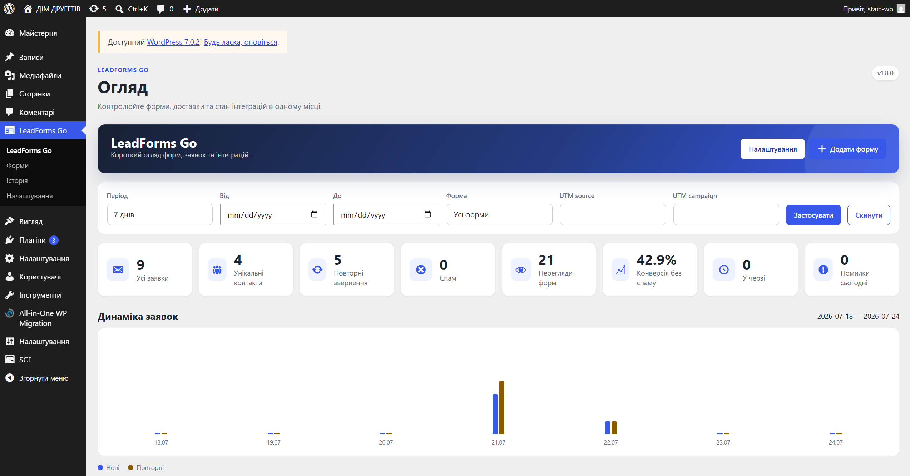

Design improvement · 24.07.2026
Dashboard має відповідати: що робити зараз і що змінилося
Початковий екран показував усі дані як однаково важливі. Через це фільтри, вісім KPI, службові стани й великий графік конкурували між собою та не давали менеджеру зрозумілого першого кроку.
Початковий стан

Нова інформаційна ієрархія
1. Потребує дії
2. Чотири основні KPI
3. Динаміка й найкращі форми
4. Деталі та технічний стан
- Нові ліди, помилки й прострочені доставки стали конкретними переходами до потрібного списку.
- На першому рівні залишені заявки, конверсія, унікальні контакти та повторні звернення.
- Перегляди, спам і черга стали другорядним компактним рядком.
- Розширені фільтри, рекламні зрізи, інтеграції та cron тепер розкриваються за потреби.
Рішення реалізовано в адмінці LeadForms Go.
Референсні патерни
Принципи для подальших змін
Дія раніше за діагностику
Проблеми й необроблені заявки мають бути вище графіків та системної статистики.
Не більше чотирьох KPI
Решта чисел має пояснювати основні показники або жити в окремому технічному блоці.
Progressive disclosure
Рідко вживані фільтри та деталізацію варто показувати лише після явного запиту користувача.
Один блок — одне питання
Кожен модуль dashboard має мати зрозумілий заголовок і одну мету, а не бути просто контейнером для даних.